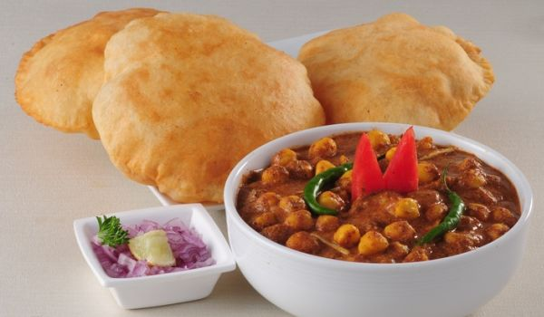

A popular Punjabi dish made with chole (chickpeas) and bhature (deep fried bread).

Ingredients
For the Chana Masala :
2 TbspCumin Seeds
3 TbspCoriander Seeds
5 no.Cloves
3 No.Bay Leaves
2 InchCinnamon Stick
1 No.Star Anise
3 No.Black Cardamom
5-6 No.Green Cardamom
1 No.Mace
4-5 No.Spicy Red Chillies
3 TbspPomegranate Seeds
1 TbspKasuri Methi
1/4 tspFenugreek Seeds
A Pinchof Salt
1 TbspDry Mango Powder
2 TspBlack Salt
1 TbspKashmiri Red Chillii Powder
Chole :
1 TbspDry Aavla
2 CupsChole
As RequiredWater
2 TbspTea Leaves
1 TspCarmon Seeds
2 No.Black Cardamom
3 No.Green Cardamom
3 No.Cloves
3-4 No.Black Peppercorns
1 InchCinnamon Stick
2 CupsChole
Preparation
Preheat a cooker for making the Green pea pulao. Once rightly hot, add ghee then add cumin seeds. Reduce flame. Put these whole spices in ghee and saute them.
Add ginger julienne,chopped green chili and saute the spices, add cashews and roast until slightly pink.
Add 1.5 cup green peas to it stir and saute for 1 minute. Add rice previously soaked in water for 20 minutes. Stir and saute these for 1 minute. Keep flame medium.
Add water, Add salt, garam masala. Mix well. Add 1 lemon's juice to it. Mix it. Close the lid of the cooker and cook until 1 whistle then turn off flame. Wait till pressure escapes.
Check the pulao, stir it lightly to make it more grainy, keep it open.
Mouth drooling Green Pea pulao is ready. Take out the pulao in a serving bowl. Relish with green coriander chutney, curd, pickle or papad.